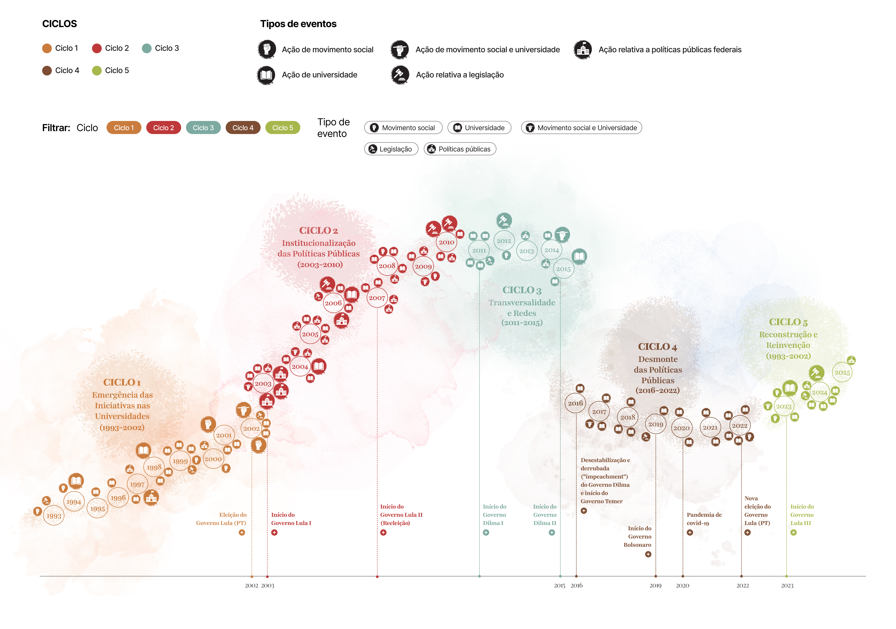

Universidades e Movimentos Sociais
Um levantamento espaço-temporal das iniciativas universitárias em parceria com movimentos sociais no Brasil, da redemocratização aos dias atuais.
"Há décadas, iniciativas nas universidades constroem, junto a movimentos sociais, caminhos para outra economia — solidária, feminista e ecológica."
Inspirado no conceito de Universidade Necessária · Darcy RibeiroIncubadoras, núcleos, projetos e coletivos mapeados em todas as regiões. Filtre por região, tipo de instituição, rede e tema de atuação.
Da redemocratização à reconstrução pós-pandemia — ações das universidades, dos movimentos sociais, legislação e políticas públicas em uma narrativa contínua.

"Há décadas, iniciativas nas universidades constroem, junto a movimentos sociais, caminhos para outra economia — solidária, feminista e ecológica."
Inspirado no conceito de Universidade Necessária · Darcy RibeiroO Painel da Linha 7 documenta, mapeia e divulga a presença nas universidades brasileiras de iniciativas dedicadas à construção de uma economia solidária, feminista e ecológica. Incubadoras, núcleos, projetos e coletivos que, por décadas, atuaram ao lado de comunidades e movimentos populares.
Em um cenário de múltiplas crises — climática, democrática, social — este painel torna visível o que sempre existiu: uma universidade comprometida com a transformação.
Da visualização geográfica à leitura histórica e conceitual — cada seção abre um caminho diferente.
130+ iniciativas pelo território. Filtre por região, rede e tema.
Cinco ciclos históricos da economia solidária nas universidades.
Textos e vídeo-animações sobre soberania, cuidado e habitação.
Termos-chave do debate para quem chega ao tema pela primeira vez.
Dados e análises sobre distribuição regional, redes e tipos institucionais.
Critérios, fontes, equipe e limites do levantamento.